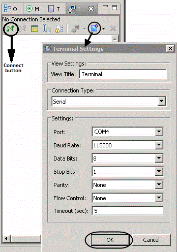

| Note | |
|
The Sourcery Probe Personal PowerPC models do not support a virtual serial console. |
|
To access the serial port for the probe connect it to the USB port of the host and use the Terminal view in Sourcery CodeBench (select Window > Show View > Other - Terminal) to connect to the serial port. Choose Serial as the connection type, then set the serial port settings as follows:
After applying these settings as shown in Figure A‑6, click the Connect button to open the connection, and then press the <ESC> key for the probe's console menu.
Figure A‑6. New Terminal Connection using Sourcery CodeBench Terminal View
For more information on the USB serial port, refer to the Mentor Embedded Sourcery Probe Personal Hardware Manual and the Mentor Embedded Sourcery Probe Professional Hardware Manual.